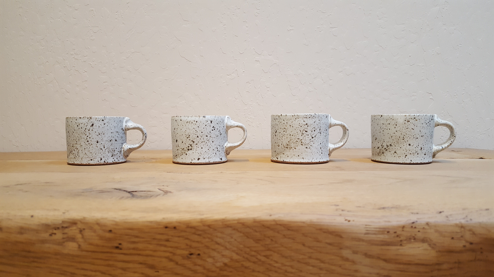

About Me

Mitch Evans is a full stack web developer from Walnut Creek, CA. He attended Sacramento State University and graduated in 2014 with a bachelor's degree in philosphy. After college, he moved back to the bay area to obtain his paralegal certificate from Cal State East Bay. He has worked as a paralegal in Estate Planning, Probate and Trust Administration and Family Law. With the desire to enter a new field of work and tap into his creative side, he obtained a certificate for web development from UC Berkeley Extension.
His intrests include making pottery, watching baseball, and spending time outside. He is a member of the Red Ox Clay Studio in Concord, CA where he makes and sells his pottery.